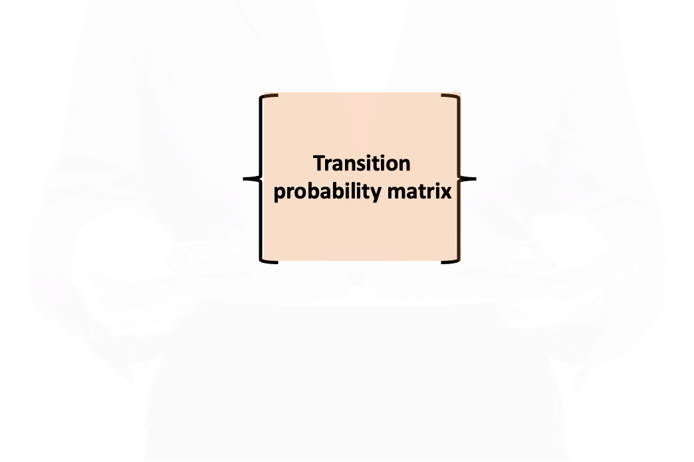
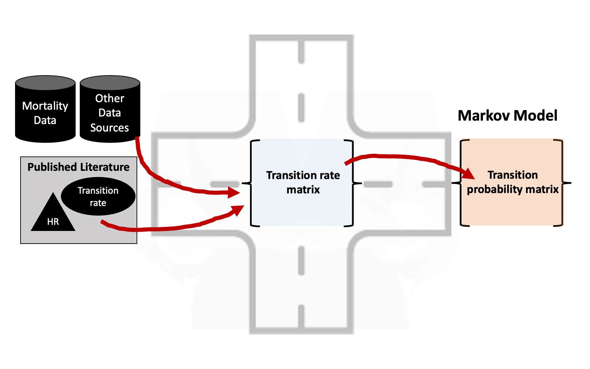
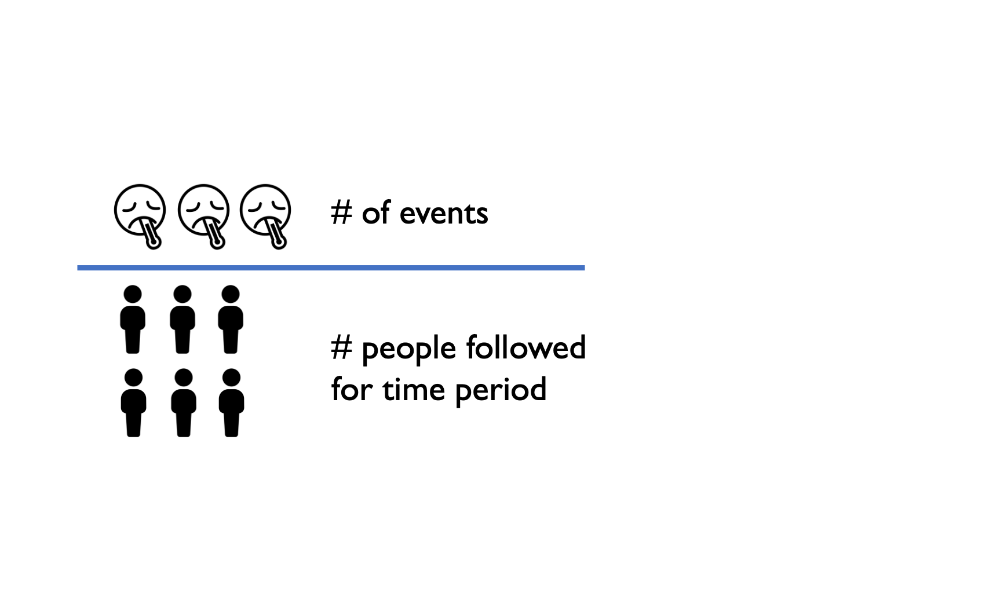
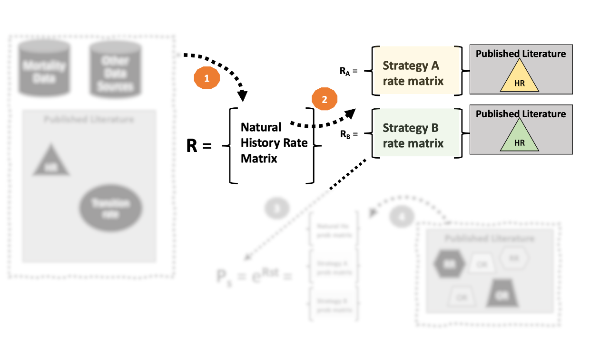
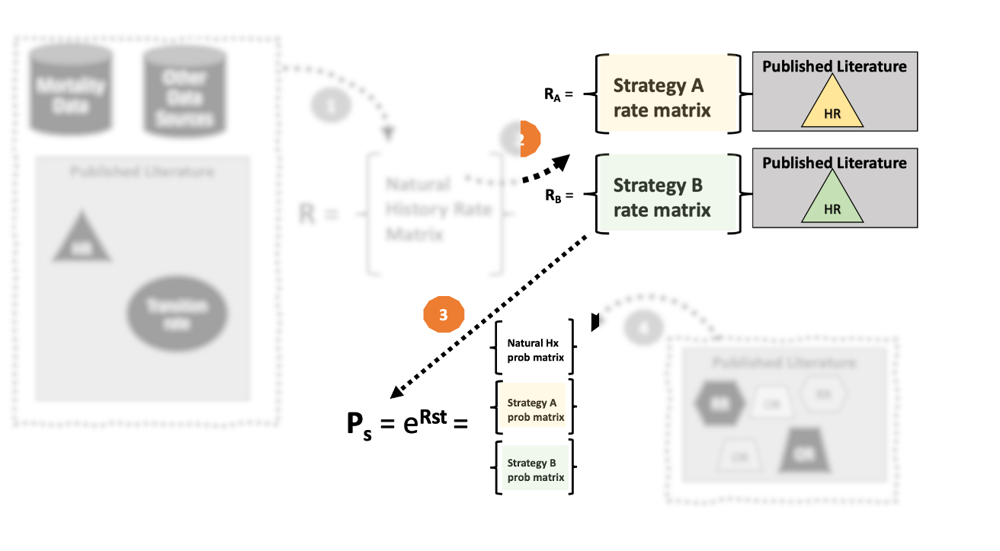
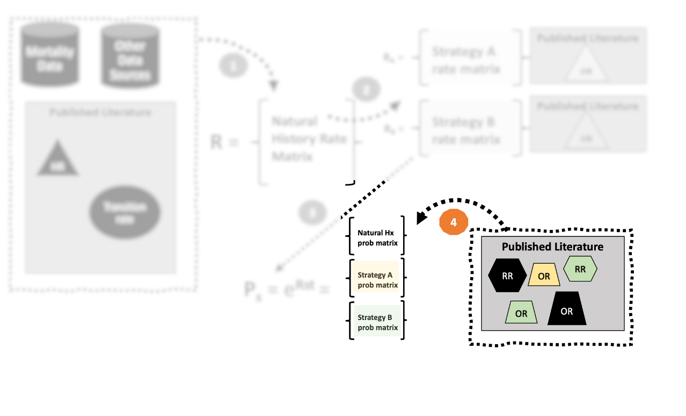

| CHF | D_CHF | D_OTH | |
|---|---|---|---|
| CHF | 0 | 0 | 0 |
| D_CHF | 0 | 0 | 0 |
| D_OTH | 0 | 0 | 0 |
Structuring a Markov Model
Learning Objectives and Outline
Learning Objectives
- Understand differences between rates and probabilities, hazard rates, relative risks, and other relevant model inputs.
- Understand rate-to-probability conversion formulas and transition probability embedding.
- Explain how to embed a transition probability matrix with a defined timestep.
- Explore age-, time- and country/region-specific adjustments to a Markov model.
Outline
- Rates, probabilities, and other model inputs.
- Constructing the transition probability matrix.
- Model dynamics
- Non-stationary rates: mortality and other time/age-varying parameters.
- Tunnel states and other disease-specific transition dynamics
Goal
What Never Happens
Problem
- Need transition probabilities but literature-based parameters are reported as:
- Rates
- Hazard ratios
- Odds ratios
- Relative risks
- Transition probabilities (rare!)
How can we deal with this?
Solution
- Need “common ground” where we can combine and transform different model inputs.
- This “common ground” is often found in a transition rate matrix.
Solution
Solution

Solution
Solution
Transition Rate Matrix
- The central “hub” of a Markov model.
- Straightforward to convert rate matrix into a transition probability matrix.
- Can be used to change the cycle length.
- Facilitates modeling using alternative techniques:
- Continuous time Markov
- Discrete event simulation
Four-Step Process
- Use data inputs/published literature to define a rate matrix \(\mathbf{R}\).
- Make strategy-specific adjustments to \(\mathbf{R}\) as needed.
- “Embed” the transition probability matrix using the rate matrix
- Make further overall or strategy-specific adjustments to \(\mathbf{P}\) as needed.
What is the difference between a rate and a probability?
Rates vs. Probabilities
- Rate: number of occurrences of an event per unit of time.
- Probability: Liklihood that an event will occur for an in individual over a defined time period.
- Major difference is in denominator: rates take into account time at risk while probabilities do not.
Rates vs. Probabilities
Rates
- Number of events divided by the total time at risk experienced by all people followed.
- Ranges from 0 to \(\infty\).
- \(\frac{\# \text{events in time period}}{\text{Total time period experienced by all subjects followed}}\)
Rates
Probabilities
Rates vs. Probabilities: Example1
- Suppose a study followed 100 people with congestive heart failure for 4 years.
- At the end of 4 years, 40 had died.
- The probability of death over 4 years is \(40/100=0.40\).
Rates vs. Probabilities: Example1
- A rate takes into acccount the time each person was at risk.
- The 60 who survived were at risk the entire 4 years and contributed \(60 \times 4 = 240\) years at risk.
- Once a person dies, he/she is no longer at risk.
Rates vs. Probabilities: Example1
- When a study does not report time at risk, the conventional assumption is that the events were spread evenly over the time period.
- Using this assumption, the average time at risk for the 40 who died was 2 years, adding 40 × 2 = 80 years at risk.
Rates vs. Probabilities: Example1
- Total time at risk for the cohort of 100 people is 320 person-years (240+80).
- Thus, the rate of death from CHF is 40/320 = 0.125 deaths per person-year.
- Let’s now construct a rate matrix with three states: CHF, Death from CHF, and Death from other causes.
Rates vs. Probabilities: Example
Rates vs. Probabilities: Example
- 0.125 per person year is the rate we’d enter into our rate matrix.
- We could also think of a separate death rate from background causes (e.g., 0.006 per person-year).1
Rates vs. Probabilities: Example
| CHF | D_CHF | D_OTH | |
|---|---|---|---|
| CHF | 0 | 0.125 | 0.006 |
| D_CHF | 0 | 0.000 | 0.000 |
| D_OTH | 0 | 0.000 | 0.000 |
Rates vs. Probabilities: Example
- The diagonal elements in a rate matrix are just the negative sum of the off-diagonal elements.
- In this example, the diagonal value for the 1st row would be -0.131 = -(0.125+0.006)
- We can leave all other rate matrix values at 0 because the rate of progression from death to other states is zero.
| CHF | Death_CHF | Death_Other | |
|---|---|---|---|
| CHF | -0.131 | 0.125 | 0.006 |
| Death_CHF | 0 | 0.000 | 0.000 |
| Death_Other | 0 | 0.000 | 0.000 |
Summary: Rates vs. Probabilities
| Statistic | Evaluates | Range | Applicable Domain |
|---|---|---|---|
| Rate | \(\frac{\# \text{events in time period}}{\text{Total time period experienced by all subjects followed}}\) | 0 to \(\infty\) | Rate matrix |
| Probability/risk | \(\frac{\# \text{events in time period}}{\# \text{people followed for time period}}\) | 0-1 | Probability matrix |
1. Place rates in a rate matrix \(\mathbf{R}\).

1. Place rates in a rate matrix \(\mathbf{R}\).
- Country/region-specific background mortality rate (0.006)
- Disease mortality rates from existing population-based epidemiological study. (e.g., 0.125 = 40 cases per 320 person-years)
- Diagonal value that is the negative sum of the off-diagonal values in each row (-0.131).
“Natural History” (i.e., “do nothing”) rate matrix:
| CHF | Death_CHF | Death_Other | |
|---|---|---|---|
| CHF | -0.131 | 0.125 | 0.006 |
| Death_CHF | 0.000 | 0.000 | 0.000 |
| Death_Other | 0.000 | 0.000 | 0.000 |
1. Place rates in a rate matrix \(\mathbf{R}\).
- What we have just done is contruct a rate matrix for a “natural history” model of the disease (CHF).
- This is a version of the model in which we allow the disease process to play out naturally, with no further intervention.
- Sometimes called a “do nothing” strategy.
1. Place rates in a rate matrix \(\mathbf{R}\).
- The “natural history” model is useful because it can help us verify that the model matches what we see in the “real world.”
- The “natural history” model also can be used to calibrate transition rates to different countries/contexts.
- For example, we could recalibrate the model so the CHF mortality transition rate matches our country-specific data.
1. Place rates in a rate matrix \(\mathbf{R}\).
- Alternatively, suppose we “borrow” a model developed in another country/context.
- That model will be based on underlying rates specific to that context.
- The underlying rate matrix can be used to “swap in” transition rates that apply to our country/context.
- Example: change the background mortality rate to match you country’s.
2. Make adjustments to \(\mathbf{R}\) as needed.
2. Make adjustments to \(\mathbf{R}\) as needed.
- Suppose that a new strategy can reduces the risk of CHF mortality by 20% (i.e., hazard ratio = 0.8).
- We can simply apply this hazard ratio directly to construct a rate matrix for strategy A.
- For the Strategy A rate matrix, the rate of CHF death is \(0.8 * 0.125 = 0.1\)
- Make sure that the diagonal element is adjusted to account for this change!
“Natural History” rate matrix
| CHF | Death_CHF | Death_Other | |
|---|---|---|---|
| CHF | -0.131 | 0.125 | 0.006 |
| Death_CHF | 0.000 | 0.000 | 0.000 |
| Death_Other | 0.000 | 0.000 | 0.000 |
2. Make adjustments to \(\mathbf{R}\) as needed.
- Suppose that a new strategy can reduces the risk of CHF mortality by 20% (i.e., hazard ratio = 0.8).
- We can simply apply this hazard ratio directly to construct a rate matrix for strategy A.
- For the Strategy A rate matrix, the rate of CHF death is \(0.8 * 0.125 = 0.1\)
- Make sure that the diagonal element is adjusted to account for this change!
“Natural History” rate matrix
| CHF | Death_CHF | Death_Other | |
|---|---|---|---|
| CHF | -0.131 | 0.125 | 0.006 |
| Death_CHF | 0.000 | 0.000 | 0.000 |
| Death_Other | 0.000 | 0.000 | 0.000 |
“Strategy A” rate matrix
| CHF | Death_CHF | Death_Other | |
|---|---|---|---|
| CHF | -0.106 | 0.1 | 0.006 |
| Death_CHF | 0 | 0 | 0.000 |
| Death_Other | 0 | 0 | 0.000 |
2. Make adjustments to \(\mathbf{R}\) as needed.
- Another adjustment we could make at this stage is the time cycle length.
- Suppose our rate matrix is defined in terms of a one-year time cycle, but we want to convert to a monthly cycle.
- In that event, we’d simply divide each rate in the matrix by 12, and the resulting matrix would be for a monthly timestep.
“Natural History” rate matrix (one-year timestep)
| CHF | Death_CHF | Death_Other | |
|---|---|---|---|
| CHF | -0.131 | 0.125 | 0.006 |
| Death_CHF | 0.000 | 0.000 | 0.000 |
| Death_Other | 0.000 | 0.000 | 0.000 |
2. Make adjustments to \(\mathbf{R}\) as needed.
- Another adjustment we could make at this stage is the time cycle length.
- Suppose our rate matrix is defined in terms of a one-year time cycle, but we want to convert to a monthly cycle.
- In that event, we’d simply divide each rate in the matrix by 12, and the resulting matrix would be for a monthly timestep.
“Natural History” rate matrix (one-year timestep)
| CHF | Death_CHF | Death_Other | |
|---|---|---|---|
| CHF | -0.131 | 0.125 | 0.006 |
| Death_CHF | 0.000 | 0.000 | 0.000 |
| Death_Other | 0.000 | 0.000 | 0.000 |
“Natural History” rate matrix (one-month timestep)
| CHF | Death_CHF | Death_Other | |
|---|---|---|---|
| CHF | -0.0109 | 0.0104 | 5e-04 |
| Death_CHF | 0 | 0 | 0 |
| Death_Other | 0 | 0 | 0 |
3. “Embed” the transition probability matrix using the rate matrix
3. “Embed” the transition probability matrix using the rate matrix
- Our next step is to convert the transition rate matrix into a transition probability matrix.
- Common practice is to use rate-to-probability conversion formulas
3. “Embed” the transition probability matrix using the rate matrix
- Our next step is to convert the transition rate matrix into a transition probability matrix.
- Common practice is to use rate-to-probability conversion formulas
\[ p = 1 - \exp(-rt) \] where \(r\) is the rate and \(t\) is the time-step.
3. “Embed” the transition probability matrix using the rate matrix
- This formula works fine when there is only one possible state an individual can transition to.
- The formula will not calculate the correct transition probability if there are two or more states someone can transition to.
3. “Embed” the transition probability matrix using the rate matrix
- We will cover two approaches for constructing a transition probability matrix.
- The first is technically incorrect, but is widely used and easier to implement because it ignores compound transitions (i.e., multiple transitions within a cycle).
- You can get around these issues if you use a relatively short cycle length.
3. “Embed” the transition probability matrix using the rate matrix
The two approaches
- 3a. Construct a transition probability matrix using rate-to-probability conversion formulas.
- 3b. Embed the transition probability matrix using the rate matrix exponential (i.e., \(\mathbf{P}=e^{\mathbf{R}}\)).
3a. Rate-to-probability conversion
The probability of transitioning from health state \(A\) to health state \(B\) is:
\[ p_{AB}= \frac{r_{AB}}{\sum_S r_{AS}}\big ( 1 - e^{-(\sum_S r_{AS}) t}\big ) \] where \(S\) captures all the health states (i.e., columns) in the transition rate matrix, and \(t\) is the time-step (e.g., \(t=1\) if 1 year, \(t=1/12\) if one month, etc.).
3a. Rate-to-probability conversion
Let’s build on our chronic heart failure example from earlier. Here is the transition rate matrix we constructed:
| CHF | D_CHF | D_OTH | |
|---|---|---|---|
| CHF | -0.131 | 0.125 | 0.006 |
| D_CHF | 0.000 | 0.000 | 0.000 |
| D_OTH | 0.000 | 0.000 | 0.000 |
3a. Rate-to-probability conversion
Let’s now calculate the probability of transitioning from the CHF state to D_CHF (death from heart failure).
3a. Rate-to-probability conversion
Annual probability of transitioning from CHF to death from CHF:
\[ p_{\text{CHF,D_CHF}}= \frac{r_{\text{CHF,D_CHF}}}{r_{\text{CHF,D_CHF}} + r_{\text{CHF,D_OTH}}}\big ( 1 - e^{-(r_{\text{CHF,D_CHF}} + r_{\text{CHF,D_OTH}}) \times 1}\big ) \]
We can find each of these rates in our transition rate matrix…
3a. Rate-to-probability conversion
Annual probability of transitioning from CHF to death from CHF:
\[ p_{\text{CHF,D_CHF}}= \frac{\color{red}{0.125}}{\color{red}{0.125}+\color{green}{0.006}}\big ( 1 - e^{-(\color{red}{0.125}+\color{green}{0.006}) \times 1}\big ) = 0.1172 \]
| CHF | D_CHF | D_OTH | |
|---|---|---|---|
| CHF | -0.131 | 0.125 | 0.006 |
| D_CHF | 0.000 | 0 | 0 |
| D_OTH | 0.000 | 0 | 0 |
3a. Rate-to-probability conversion
Let’s now calculate the probability of transitioning from the CHF state to D_OTH (death from other causes).
3a. Rate-to-probability conversion
Annual probability of transitioning from CHF to death from other causes:
\[ p_{\text{CHF,D_CHF}}= \frac{\color{green}{0.006}}{\color{red}{0.125}+\color{green}{0.006}}\big ( 1 - e^{-(\color{red}{0.125}+\color{green}{0.006}) \times 1}\big ) = 0.00562 \]
| CHF | D_CHF | D_OTH | |
|---|---|---|---|
| CHF | -0.131 | 0.125 | 0.006 |
| D_CHF | 0.000 | 0 | 0 |
| D_OTH | 0.000 | 0 | 0 |
3a. Rate-to-probability conversion
We now have the quantities needed to complete the first row of our transition rate matrix.
Recall that the diagonal elements of the transition probability matrix are just 1 minus the other transition probabilities.
3a. Rate-to-probability conversion
Calculated transition probability matrix:
| CHF | D_CHF | D_OTH | |
|---|---|---|---|
| CHF | 0.8772 | 0.1172 | 0.0056 |
| D_CHF | 0.0000 | 1.0000 | 0.0000 |
| D_OTH | 0.0000 | 0.0000 | 1.0000 |
3b. Exponentiate the transition rate matrix
The most technically correct approach for “embedding” a transition probability matrix is using the rate matrix exponential.
This is a matrix analogue to the cellwise rate-to-probability matrix process we just went through.
3b. Exponentiate the transition rate matrix
\[ \mathbf{P} = e^{\mathbf{R}} \]
3b. Exponentiate the transition rate matrix
Pros:
Embedding the transition probability matrix in this way ensures that the correct transition probabilities are calculated.
Without going into too many details, this approach ensures that some compound transitions are not “hidden” in the Markov cycle.
This ensures that our discrete time Markov model accurately represents the underlying continuous time process.
3b. Exponentiate the transition rate matrix
Cons:
A major drawback is that this approach can create some “jumpover” states that are seemingly inconsistent with the underlying model (see blog for more).
Accounting for “hidden” transitions and jumpover states requires augmenting the transition probability matrix (again, see blog for details).
3b. Exponentiate the transition rate matrix
Cons, cont’d:
Excel does not easily do matrix exponentiation, however you can use an approximation via a “power series expansion”
Modern (free) statistical software can easily exponentiate a matrix:
3b. Exponentiate the transition rate matrix
Cons, cont’d:
Excel does not easily do matrix exponentiation, however you can use an approximation (we’ll do this in a case study).
Modern (free) statistical software can easily exponentiate a matrix:
3b. Exponentiate the transition rate matrix
For our chronic heart failure example, the exponentiated matrix yields a very similar answer to the first approach:
| CHF | D_CHF | D_OTH | |
|---|---|---|---|
| CHF | 0.8772 | 0.1172 | 0.0056 |
| D_CHF | 0.0000 | 1.0000 | 0.0000 |
| D_OTH | 0.0000 | 0.0000 | 1.0000 |
So Where Are We Now?
So Where Are We Now?
By constructing our model using the “roots” of a transition rate matrix, we can incorporate disparate sources of information.
Facilitates country/region-specific background mortality.
Facilitates standardizing inputs measured at different time intervals.
So Where Are We Now?
Not all literature-based parameters operate on transition rates.
You will often find that the strategies you want to model have inputs based on odds ratios, relative risks, risk differences, etc.
CHF Example, Continued
Recall from earlier that we constructed two transition rate matrices:
- “Natural History” rate matrix
- Strategy A (“New Drug”) rate matrix based on a hazard ratio (for CHF mortality) of 0.8.
CHF Example, Continued
These two rate matrices can be used to construct the following transition probability matrices:
m_P_NH =
| CHF | D_CHF | D_OTH | |
|---|---|---|---|
| CHF | 0.8772 | 0.1172 | 0.0056 |
| D_CHF | 0.0000 | 1.0000 | 0.0000 |
| D_OTH | 0.0000 | 0.0000 | 1.0000 |
m_P_A =
| CHF | D_CHF | D_OTH | |
|---|---|---|---|
| CHF | 0.8994 | 0.0949 | 0.0057 |
| D_CHF | 0.0000 | 1.0000 | 0.0000 |
| D_OTH | 0.0000 | 0.0000 | 1.0000 |
CHF Example, Continued
- Now suppose we wanted to model a second strategy (“B”) based on a randomized trial of another drug.
- That trial reports an odds ratio (OR) of CHF death of 0.75.
- The probability of CHF death in the placebo (control) arm in that trial was 0.15.1
CHF Example, Continued
- An odds ratio is based on the odds of an outcome happening, which is directly related to the probability.
- Odds = \(\frac{\text{Probability of Outcome}}{1 - \text{Probability of Outcome}}\)
- Odds Ratio = \(\frac{\text{Odds of outcome in exposed}}{\text{Odds of outcome in unexposed}}\)
CHF Example, Continued
Important
Not all literature-based parameters operate on the rate scale. Some operate on the probability scale!
4. Make adjustments to \(\mathbf{P}\) as needed.
4. Make adjustments to \(\mathbf{P}\) as needed.
- Constructing our final transition probability matrix—for natural history or more specifically for for a stratgey under consideration–may require further adjustment.
- We must be careful about the scale on which these parameters apply.
- Odds ratios, relative risks, and risk differences all operate on the probability scale.
4. Make adjustments to \(\mathbf{P}\) as needed.
| Statistic | Evaluates | Range | Applicable Domain |
|---|---|---|---|
| Rate | \(\frac{\# \text{events in time period}}{\text{Total time period experienced by all subjects followed}}\) | 0 to \(\infty\) | Rate matrix |
| Hazard Ratio | \(\frac{\text{Hazard rate of outcome in exposed}}{\text{Hazard rate of outcome in unexposed}}\) | 0 to \(\infty\) | Rate matrix |
| Probability/risk | \(\frac{\# \text{events in time period}}{\# \text{people followed for time period}}\) | 0-1 | Probability matrix |
| Odds | \(\frac{\text{Probability of Outcome}}{1 - \text{Probability of Outcome}}\) | 0 to \(\infty\) | Probability matrix |
| Odds Ratio | \(\frac{\text{Odds of outcome in exposed}}{\text{Odds of outcome in unexposed}}\) | 0 to \(\infty\) | Probability matrix |
| Relative Risk | \(\frac{\text{Probability of outcome in exposed}}{\text{Probablity of outcome in unexposed}}\) | 0 to \(\infty\) | Probability matrix |
| Risk Difference | \(\text{Probability of outcome in exposed}-\text{Probablity of outcome in unexposed}\) | -1 to 1 | Probability matrix |
4. Make adjustments to \(\mathbf{P_s}\) as needed.
CHF Example, Continued
Let’s turn back to our CHF example.
- Suppose we wanted to model a second strategy (“B”) based on a randomized trial of another drug.
- That trial reports an odds ratio (OR) of CHF death of 0.75.
- The probability of CHF death in the placebo (control) arm in that trial was 0.15.
CHF Example, Continued
- We can convert an odds ratio to a relative risk (i.e., ratio of probabilities) if we know the baseline (unexposed) probability of the outcome, \(p_0\).
- In this case we were able to find \(p_0=0.15\) in the underlying clinical trial.
- If we didn’t have this information, we might assume its the same (0.1172) as in our underlying natural history probability matrix1
CHF Example, Continued
- We can convert an odds ratio to a relative risk (RR).1
- \(RR = \frac{\text{Probability of outcome in exposed}}{\text{Probablity of outcome in unexposed}} = \frac{p_1}{p_0} = \frac{OR}{(1-p_0+(p_0 \times OR))}\)
- A relative risk is the ratio of the probability of the outcome in the exposed group to the probability of the outcome in the unexposed group.
CHF Example, Continued
- \(RR = \frac{p_1}{p_0}\)
- \(p_1 = RR \times p_0\)
- \(p_{D_{CHF}} = 0.75 \times .15 = 0.1125\)
CHF Example, Continued
| CHF | D_CHF | D_OTH | |
|---|---|---|---|
| CHF | 0.8772 | 0.1172 | 0.0056 |
| D_CHF | 0.0000 | 1.0000 | 0.0000 |
| D_OTH | 0.0000 | 0.0000 | 1.0000 |
| CHF | D_CHF | D_OTH | |
|---|---|---|---|
| CHF | 0.8994 | 0.0949 | 0.0057 |
| D_CHF | 0.0000 | 1.0000 | 0.0000 |
| D_OTH | 0.0000 | 0.0000 | 1.0000 |
| CHF | D_CHF | D_OTH | |
|---|---|---|---|
| CHF | 0.8819 | 0.1125 | 0.0056 |
| D_CHF | 0.0000 | 1.0000 | 0.0000 |
| D_OTH | 0.0000 | 0.0000 | 1.0000 |
Transition probability matrices (NH = Natural History; A = Strategy A; B = Strategy B)
Full Process
Nonstationary Transitions
Transition Dynamics
- We have focused on “static” transition rate/probability matrices.
- Often, transitions vary as a function of time.
Transition Dynamics
- Nonstationary rates: background mortality rate rises with age.
- Nonstationary rates: transition to disease status may vary over different ages.
- Time-dependent event transitions: rate of adverse events after disease onset is higher in first cycle, lower in subsequent cycles.
Age-Varying Background Mortality
- Useful data source is life table data. You used this in the Alive-Dead case study!
- May be available from vital statistics division in your country.
- Also available (by region) from the UN and other organizations.
Nonstationary Rates
- You may have other parameters that vary by age.
- Disease specific mortality rate:
Source: Russell et al. (2016)
Nonstationary Rates
- You may have other parameters that vary by age.
- Disease specific mortality rate:
- Age-specific intervention rates/probabilities
Source: Russell et al. (2016)
Nonstationary Rates
- It is straightforward to incorporate these dynamics into a Markov model.
- Essentially, you recalculate the transition probability matrix in each cycle.
- This works long as the underlying rates/probabilities change by age.
- Amua can handle all of this for you, provided you enter the age-specific “lookup table” in the model (just as with background mortality).
Other Transition Dynamics
- Suppose, instead, that event/transition rates, costs, quality of life vary over the course of a disease or other process in our model.
- Example: cost, quality of life weight, or risk of adverse event (e.g., death) is different in first year after disease onset, and changes thereafter.
- These types of dynamics are more challenging to implement – but you can often do it!
Other Transition Dynamics
One option is to simply build a decision tree around events that occur at higher rates shortly after disease onset, surgery, drug initiation, etc.
The decision tree can follow people until they reach a “steady state” — then the Markov model can pick up from there.
Other Transition Dynamics
Another option is “tunnel states” — simply expand the health state to follow people over the first few cycles of onset.
Tunnel states are “non-markovian,” so they need to be added once you have the transition probability matrix defined.
Tunnel States: Healthy, Sick, Dead
- Let’s take a simple healthy, sick, dead model.
- Illness onset rate = 0.0314
- Background mortality rate = 0.0094
- Illness increases the risk of death by a hazard ratio of 5.45.
Tunnel States: Healthy, Sick, Dead
Transition rate matrix: \(\mathbf{R}\)
| H | S | D | |
|---|---|---|---|
| H | -0.0408 | 0.0314 | 0.0094 |
| S | 0.0000 | -0.0513 | 0.0513 |
| D | 0.0000 | 0.0000 | 0.0000 |
Tunnel States: Healthy, Sick, Dead
Transition probability matrix: \(\exp(\mathbf{R})\)
| H | S | D | |
|---|---|---|---|
| H | 0.96 | 0.03 | 0.01 |
| S | 0.00 | 0.95 | 0.05 |
| D | 0.00 | 0.00 | 1.00 |
Tunnel States: Healthy, Sick, Dead
Now suppose that the probability of death from disease varies by time since disease onset.
- 0.08 in first year
- 0.06 in second year
- 0.04 in third year onwards
We can add tunnel states to our transition probability matrix to accomodate this.
Tunnel States: Healthy, Sick, Dead
- Here is the new transition probability matrix.
- Notice how the tunnel states “force” people to transition either to the next disease state if they do not die of the disease in the cycle.
| H | S1 | S2 | S | D | |
|---|---|---|---|---|---|
| H | 0.96 | 0.03 | 0.00 | 0.00 | 0.01 |
| S1 | 0.00 | 0.00 | 0.92 | 0.00 | 0.08 |
| S2 | 0.00 | 0.00 | 0.00 | 0.94 | 0.06 |
| S | 0.00 | 0.00 | 0.00 | 0.96 | 0.04 |
| D | 0.00 | 0.00 | 0.00 | 0.00 | 1.00 |
Tunnel States: Healthy, Sick, Dead
- If we run out the Markov trace for five cycles, here are the results.
| cycle | H | S1 | S2 | S | S_total | D |
|---|---|---|---|---|---|---|
| 0 | 1000 | 0 | 0 | 0 | 0 | 0 |
| 1 | 960 | 30 | 0 | 0 | 30 | 10 |
| 2 | 922 | 29 | 28 | 0 | 57 | 22 |
| 3 | 885 | 28 | 26 | 26 | 80 | 35 |
| 4 | 849 | 27 | 25 | 50 | 102 | 49 |
| 5 | 815 | 25 | 24 | 72 | 121 | 63 |
References
Gidwani, Risha, and Louise B. Russell. 2020. “Estimating Transition Probabilities from Published Evidence: A Tutorial for Decision Modelers.” PharmacoEconomics 38 (11): 1153–64. https://doi.org/10.1007/s40273-020-00937-z.
Russell, Louise B., Sri Ram Pentakota, Cristiana Maria Toscano, Ben Cosgriff, and Anushua Sinha. 2016. “What Pertussis Mortality Rates Make Maternal Acellular Pertussis Immunization Cost-Effective in Low-and Middle-Income Countries? A Decision Analysis.” Clinical Infectious Diseases 63 (suppl_4): S227–35.
Zhang, Jun, and Kai F. Yu. 1998. “What’s the Relative Risk?A Method of Correcting the Odds Ratio in Cohort Studies of Common Outcomes.” JAMA 280 (19): 1690–91. https://doi.org/10.1001/jama.280.19.1690.